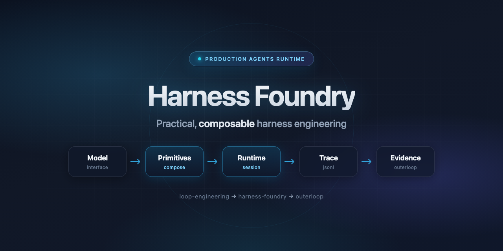

01 · MINIMAL
60-second smoke stack
Smallest reliable harness for CI and first exploration.
npx @cobusgreyling/harness-foundry init --from minimal foundry validate && foundry run --goal "Hello"
Practical, composable harness engineering for production agents.
The missing runtime layer between model and reliable behaviour.


The stack
Compose harnesses from declarative primitives. Run sessions, record traces, evolve stacks from real runs — with human gates.
Ecosystem
Design the loop. Execute the harness. Govern the outcome.
How to design reliable inner loops
Executable primitives, sessions, traces
Evidence, verdict, answerability
Quickstart
Zero-config minimal stack — validate, run, inspect the trace.
# scaffold npx @cobusgreyling/harness-foundry init --from minimal foundry validate foundry run --goal "Verify harness wiring" foundry sessions list foundry trace show --session <id> foundry evolve report --session <id> # IDE hosts foundry host integrate cursor # or claude-code # full monorepo demo git clone https://github.com/cobusgreyling/harness-foundry.git cd harness-foundry && pnpm install && pnpm build && pnpm demo
Showcases
From CI smoke tests to full governance — pick a stack and grow.
Smallest reliable harness for CI and first exploration.
npx @cobusgreyling/harness-foundry init --from minimal foundry validate && foundry run --goal "Hello"
Git worktrees, test recovery, evidence emission.
foundry init --from implementer --name my-app foundry run --goal "Implement feature X" --turns 2 foundry evolve proposal --session <id>
Evidence → verdict → answerability in one flow.
foundry run --goal "Implement with evidence" outerloop verdict review <evidence-id> outerloop ledger why <evidence-id>
Same versioned stack inside your IDE — not a one-off prompt.
foundry host integrate cursor foundry host detect foundry run --goal "…" --host cursor
Turn runs into stack improvements — with human gates.
foundry evolve report --session <id> # L1 foundry evolve proposal --session <id> # L2 # human reviews before stack.yaml change
Reusable workflow for stack validation on every pull request.
jobs:
foundry-gate:
uses: cobusgreyling/harness-foundry/
.github/workflows/foundry-gate.yml@main
Catalogue · v0.4
Versioned, declarative, swappable. Browse with foundry primitives list.
| Layer | Primitives |
|---|---|
| Interface | model/mock, model/anthropic |
| Composition | context/state-file, tools/git-worktree-write |
| Execution | control/token-budget-100k, sandbox/worktree-isolated |
| Reliability | observability/span-per-turn, emit/outerloop-evidence, recovery/revert-on-test-fail, recovery/narrow-scope |
Don’t want to touch TypeScript? Propose a primitive.
Positioning
| Approach | Strength | Gap foundry fills |
|---|---|---|
| Raw Agent SDK | Model access | No composable taxonomy, traces, or governance seam |
| LangGraph / ADK | Graph orchestration | Graph-first, not primitive-first harness engineering |
| Cursor / Claude Code | IDE agents | Host-specific; hard to version and evolve |
| loop-engineering | Loop patterns | Patterns without executable runtime |
| outerloop | Evidence & verdicts | Governance without inner-loop execution |